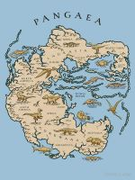

Short History of Continents

According to plate tectonic theory, the Earth’s surface is made up of slabs of rock that are slowly shifting right under our feet.
Because of this constant movement, today’s Earth looks a lot different from what it did millions of years ago. Today’s animation looks at the Earth’s tectonic plate movement from 1 ga (geological time for 1 billion years ago) to the present-day, via
EarthByte on YouTube.
The emergence of plate tectonic theory
In 1912, German scientist Alfred Wegener proposed a theory he called continental drift. According to Wegener’s theory, Earth’s continents once formed a single, giant landmass, which he called Pangaea.
Over millions of years, Pangaea slowly broke apart, eventually forming the continents as they are today. Wegener believed this continental drift explained why the borders of South America and Africa looked like matching puzzle pieces. He also pointed to similar rock formations and fossils on these two continents as proof to back his theory.